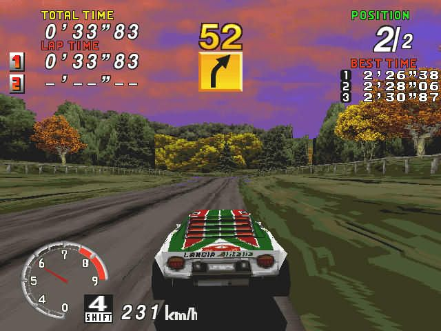
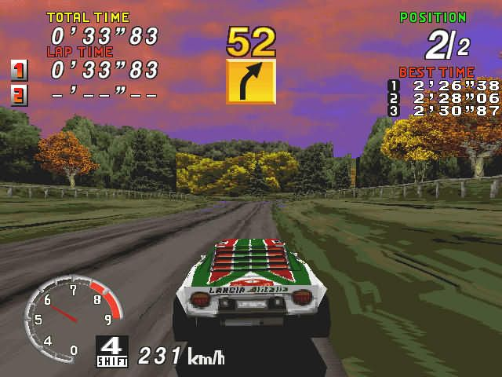

Play date: 1995
Developer: Sega
Publisher: Sega
Memo: It's running...
Description: Sega Rally Championship is a 1994 racing game developed by Sega AM3 and published by Sega.[5] Originally released for arcades using the Sega Model 2 board, ports were published for the Sega Saturn in 1995 and Microsoft Windows in 1997. Sega Rally Championship simulates driving on different surfaces, with different friction properties, with the car's handling changing accordingly. As the first racing game to incorporate this feature, Sega Rally Championship is considered to be one of the milestones in the evolution of the racing game genre.[6] It was also an early rally racing game and featured cooperative gameplay alongside the usual competitive multiplayer.

 
